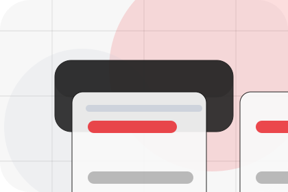
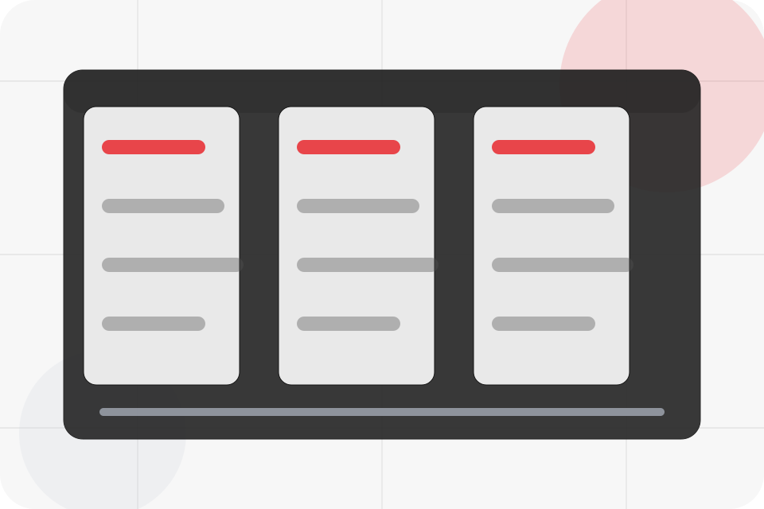
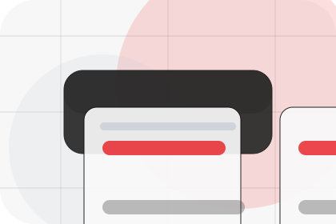
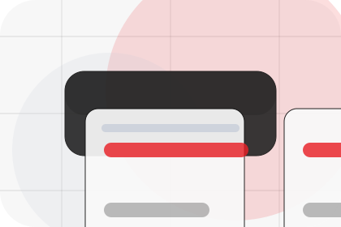
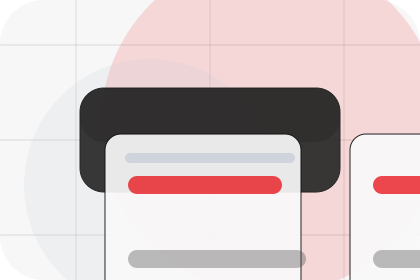
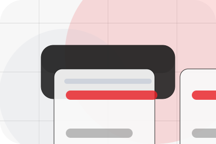
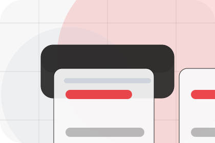
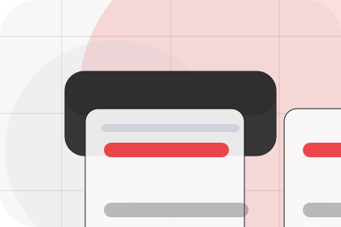
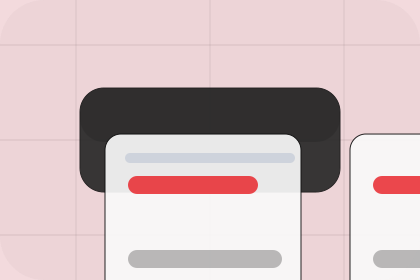

Better State
Solar defines what becomes clearer, easier, or safer when Vault is the chosen route.
Solutions / 01
Solutions opens as a clear energy decision hub: what Vault offers, who it helps, why it matters, and which route to take first.
The first screen combines positioning, proof, primary action, and fast internal navigation, so people can act immediately or compare the rest of the solutions route with context.
Centered product hero
Select the closest route and Vault keeps the next step, proof, and follow-up expectation aligned with cost reduction and resilience.

Solutions / 02
Solar defines the better state Vault is built to create, with enough detail to make the promise believable.
A renewable energy product site with minimalist hero, savings modules, battery/solar cards, and direct calculator. The section grounds that direction in concrete benefits, visible tradeoffs, and a next route visitors can use when the promise feels relevant.
Explore Solutions
Solar defines what becomes clearer, easier, or safer when Vault is the chosen route.

The benefit is tied to cost reduction and resilience, not a vague quality claim.

Visitors get a linked path to compare the promise against services, standards, or examples.
Solutions / 03
Storage defines the better state Vault is built to create, with enough detail to make the promise believable.
A renewable energy product site with minimalist hero, savings modules, battery/solar cards, and direct calculator. The section grounds that direction in concrete benefits, visible tradeoffs, and a next route visitors can use when the promise feels relevant.
Explore SolutionsStorage defines what becomes clearer, easier, or safer when Vault is the chosen route.
The benefit is tied to cost reduction and resilience, not a vague quality claim.
Visitors get a linked path to compare the promise against services, standards, or examples.
Solutions / 04
Efficiency defines the better state Vault is built to create, with enough detail to make the promise believable.
A renewable energy product site with minimalist hero, savings modules, battery/solar cards, and direct calculator. The section grounds that direction in concrete benefits, visible tradeoffs, and a next route visitors can use when the promise feels relevant.
Explore SolutionsEfficiency defines what becomes clearer, easier, or safer when Vault is the chosen route.
The benefit is tied to cost reduction and resilience, not a vague quality claim.
Visitors get a linked path to compare the promise against services, standards, or examples.
Solutions / 05
Monitoring defines the better state Vault is built to create, with enough detail to make the promise believable.
A renewable energy product site with minimalist hero, savings modules, battery/solar cards, and direct calculator. The section grounds that direction in concrete benefits, visible tradeoffs, and a next route visitors can use when the promise feels relevant.
Explore SolutionsVault structures monitoring around better state, practical gain, and a clear next route so visitors can compare the block quickly before they calculate savings.
Calculate SavingsSolutions / 06
Backup defines the better state Vault is built to create, with enough detail to make the promise believable.
A renewable energy product site with minimalist hero, savings modules, battery/solar cards, and direct calculator. The section grounds that direction in concrete benefits, visible tradeoffs, and a next route visitors can use when the promise feels relevant.
Explore Solutions

Backup defines what becomes clearer, easier, or safer when Vault is the chosen route.
Solutions / 07
Commercial defines the better state Vault is built to create, with enough detail to make the promise believable.
A renewable energy product site with minimalist hero, savings modules, battery/solar cards, and direct calculator. The section grounds that direction in concrete benefits, visible tradeoffs, and a next route visitors can use when the promise feels relevant.
Explore SolutionsCommercial defines what becomes clearer, easier, or safer when Vault is the chosen route.

The benefit is tied to cost reduction and resilience, not a vague quality claim.

Visitors get a linked path to compare the promise against services, standards, or examples.
Solutions / 08
Residential defines the better state Vault is built to create, with enough detail to make the promise believable.
A renewable energy product site with minimalist hero, savings modules, battery/solar cards, and direct calculator. The section grounds that direction in concrete benefits, visible tradeoffs, and a next route visitors can use when the promise feels relevant.
Explore SolutionsResidential defines what becomes clearer, easier, or safer when Vault is the chosen route.
The benefit is tied to cost reduction and resilience, not a vague quality claim.
Visitors get a linked path to compare the promise against services, standards, or examples.
Solutions / 09
Benefits defines the better state Vault is built to create, with enough detail to make the promise believable.
A renewable energy product site with minimalist hero, savings modules, battery/solar cards, and direct calculator. The section grounds that direction in concrete benefits, visible tradeoffs, and a next route visitors can use when the promise feels relevant.
Explore SolutionsBenefits defines what becomes clearer, easier, or safer when Vault is the chosen route.
The benefit is tied to cost reduction and resilience, not a vague quality claim.
Visitors get a linked path to compare the promise against services, standards, or examples.
Solutions / 10
Vault closes the solutions route with a clear action, a quick reminder of the value, and a low-friction way to calculate savings.
Visitors who are ready can use the primary action. Visitors who are still comparing can scan the section links, proof, and support routes before they calculate savings.
Calculate SavingsThe final block keeps the choice simple: act now, compare one more proof route, or send enough detail for a focused response.
Calculate Savingscost reduction and resilience
A renewable energy product site with minimalist hero, savings modules, battery/solar cards, and direct calculator. Solutions ends with a direct path to calculate savings, plus enough context for visitors who still need to compare.

Calculate SavingsInformation is provided for planning and should be reviewed for the final client, location, and operating rules.